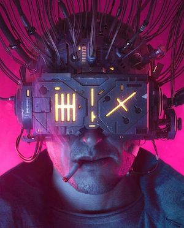

2.4.0 Bilder och bakgrunder
Innehåll
Bakgrunder
Bakgrunder definierar bakgrundseffekter för element. Det finns ett flertal egenskaper som kan används för att modifera bakgrunden, dessa kommer förklaras kort nedan.
background
Egenskapen sätter en bakgrund för ett element och är kort för background-color, background-image, background-position, background-size, background-repeat, background-orgin, background-clip och background-attachment.
background-image
Egenskapen sätter en backgrund baserad på CSS funktioner bl.a. URL() som laddar in en bildfil. Det går att sätta fler bakgrundsbilder genom att separera dem med ett komma.
background-repeat
Egenskapen används för att upprepa en bakgrundbild och de främst använda värdena är no-repeat för ingen upprepning, bilden visas en gång, repeat-y för att upprepa vertikalt, repeat-x för att upprepa horizontieltl och repeat för att upprepas både vertikallt och horizontiellt.
background-position
Egenskapen sätter startpositionen för en background-image där top-left är standardvärdet. Egenskapen består av två delar, den horisontella placering och den vertikala placeringen. Om endast en av den anges så sätts det andra värdet med center. Dessa går även att ange med andra enheter som pixel och procent.
background-attachment
Egenskapen sätter huruvida en background-image skall följa resten av sidan vid rullning (scroll) eller om den skall vara fixerad. Anger man scroll så kommer bakgrundsbilden att följa sidan vid rullning, anger man fixed så kommer bilden vara fixerad och inte följa vid rullning, anger man local så kommer bilden att rulla med sitt elements innehåll.
CSS
body.demo-background {
background: #454C56 url(../assets/orange.png) top left / 50px;
}
h1.demo-background {
background: url(../assets/orange.png) right center / 30px no-repeat;
}
li.demo-background {
background: bisque url(../assets/orange.png) center center / 15px no-repeat;
}
div.demo-background {
width: 150px;
height: 150px;
color: white;
background: green url(../assets/orange.png) left center / 50px repeat-x;
}
HTML
<body class="demo-background">...</body>
<h1 class="demo-background">Header med bakgrundsbild</h1>
<ol>
<li class="demo-background">Artikel med bakgrundsbild</li>
</ol>
<div class="demo-background">Division med bakgrundsbild</div>
Resultat
Header med bakgrundsbild
- Artikel med bakgrundsbild
Division med bakgrundsbild
Referenser (läs vidare)
https://www.w3schools.com/cssref/css3_pr_background.asp https://www.webfx.com/blog/web-design/background-css-shorthand/Bilder och textflöded
För att få text att flöda propert runt bilder så kan det behövas definieras CSS. Det finns ett antal sätt och några av dessa kommer visas nedan, de viktigaste attributen är float och clear.
float
Egenskapen specificerar hur ett element skall flyta, d.v.s. huruvida elementet skall placeras på vänster eller höger sida (i sin rymd). Anger man left så placerar sig elementet på vänster sida, anger man right så placerar sig elementet på höger sida och anger man none så placerar sig elementet utefter innehållet.
CSS
.demo-overflow-clearfix {
overflow: auto;
}
.demo-image {
height: 250px;
}
.demo-float-left {
float: left;
margin-right: 8px;
}
HTML
<div class="demo-overflow-clearfix">
<img class="demo-image demo-float-left" src="../assets/neuromancer.jpg" alt="Neuromancer">
<h1>Part One; Chiba City Blues</h1>
... text from Neuromancer; Part One; Chiba City Blues
</div>
Resultat

Ratz was tending bar, his prosthetic arm jerking monotonously as he filled a tray of glasses with draft Kirin. He saw Case and smiled, his teeth a webwork of East European steel and brown decay. Case found a place at the bar, between the unlikely tan on one of Lonny Zone's whores and the crisp naval uniform of a tall African whose cheekbones were ridged with precise rows of tribal scars. `Wage was in here early, with two joeboys,' Ratz said, shoving a draft across the bar with his good hand. `Maybe some business with you, Case?'
Case shrugged. The girl to his right giggled and nudged him.
The bartender's smile widened. His ugliness was the stuff of legend. In an age of affordable beauty, there was something heraldic about his lack of it. The antique arm whined as he reached for another mug. It was a Russian military prosthesis, a seven-function force-feedback manipulator, cased in grubby pink plastic. `You are too much the artiste, Herr Case.' Ratz grunted; the sound served him as laughter. He scratched his overhang of white-shirted belly with the pink claw. `You are the artiste of the slightly funny deal.'
`Sure,' Case said, and sipped his beer. `Somebody's gotta be funny around here. Sure the fuck isn't you.'
The whore's giggle went up an octave.
`Isn't you either, sister. So you vanish, okay? Zone, he's a close personal friend of mine.'
Part One; Chiba City Blues
The sky above the port was the color of television, tuned to a dead channel. `It's not like I'm using,' Case heard someone say, as he shouldered his way through the crowd around the door of the Chat. `It's like my body's developed this massive drug deficiency.' It was a Sprawl voice and a Sprawl joke. The Chatsubo was a bar for professional expatriates; you could drink there for a week and never hear two words in Japanese.Ratz was tending bar, his prosthetic arm jerking monotonously as he filled a tray of glasses with draft Kirin. He saw Case and smiled, his teeth a webwork of East European steel and brown decay. Case found a place at the bar, between the unlikely tan on one of Lonny Zone's whores and the crisp naval uniform of a tall African whose cheekbones were ridged with precise rows of tribal scars. `Wage was in here early, with two joeboys,' Ratz said, shoving a draft across the bar with his good hand. `Maybe some business with you, Case?'
Case shrugged. The girl to his right giggled and nudged him.
The bartender's smile widened. His ugliness was the stuff of legend. In an age of affordable beauty, there was something heraldic about his lack of it. The antique arm whined as he reached for another mug. It was a Russian military prosthesis, a seven-function force-feedback manipulator, cased in grubby pink plastic. `You are too much the artiste, Herr Case.' Ratz grunted; the sound served him as laughter. He scratched his overhang of white-shirted belly with the pink claw. `You are the artiste of the slightly funny deal.'
`Sure,' Case said, and sipped his beer. `Somebody's gotta be funny around here. Sure the fuck isn't you.'
The whore's giggle went up an octave.
`Isn't you either, sister. So you vanish, okay? Zone, he's a close personal friend of mine.'
clear
Egenskapen specificerar att det inte är tillåtet att flyta bredvid ett element, det går att specificera explicit åt vilket håll som inte är tillåtet; left, right, both eller none (standard). Anger man left är det därmed inte möjlgt med element som flyter åt vänstersida, anger man right så är det inte möjligt med flytelement på höger sida, anger man both så är det inte möjligt på någon av sidorna och anger man none så är det tillåtet att flyta på båda sidorna.
CSS
.demo-overflow-clearfix {
overflow: auto;
}
.demo-image {
height: 250px;
}
.demo-float-right {
float: right;
margin-left: 8px;
}
.demo-clear-right {
clear: right;
}
HTML
<div class="demo-overflow-clearfix">
<img class="demo-image demo-float-right" src="../assets/neuromancer.jpg" alt="Neuromancer">
<h1>Part One; Chiba City Blues</h1>
... uppdelad text from Neuromancer; Part One; Chiba City Blues
<h2 class="demo-clear-right">Continuation...</h2>
... uppdelad text from Neuromancer; Part One; Chiba City Blues
</div>
Resultat
Part One; Chiba City Blues
The sky above the port was the color of television, tuned to a dead channel. `It's not like I'm using,' Case heard someone say, as he shouldered his way through the crowd around the door of the Chat. `It's like my body's developed this massive drug deficiency.' It was a Sprawl voice and a Sprawl joke. The Chatsubo was a bar for professional expatriates; you could drink there for a week and never hear two words in Japanese.Ratz was tending bar, his prosthetic arm jerking monotonously as he filled a tray of glasses with draft Kirin. He saw Case and smiled, his teeth a webwork of East European steel and brown decay. Case found a place at the bar, between the unlikely tan on one of Lonny Zone's whores and the crisp naval uniform of a tall African whose cheekbones were ridged with precise rows of tribal scars. `Wage was in here early, with two joeboys,' Ratz said, shoving a draft across the bar with his good hand. `Maybe some business with you, Case?'
Continuation...
Case shrugged. The girl to his right giggled and nudged him.The bartender's smile widened. His ugliness was the stuff of legend. In an age of affordable beauty, there was something heraldic about his lack of it. The antique arm whined as he reached for another mug. It was a Russian military prosthesis, a seven-function force-feedback manipulator, cased in grubby pink plastic. `You are too much the artiste, Herr Case.' Ratz grunted; the sound served him as laughter. He scratched his overhang of white-shirted belly with the pink claw. `You are the artiste of the slightly funny deal.'
`Sure,' Case said, and sipped his beer. `Somebody's gotta be funny around here. Sure the fuck isn't you.'
The whore's giggle went up an octave.
`Isn't you either, sister. So you vanish, okay? Zone, he's a close personal friend of mine.'
Stylning av bilder
Det går att sätta stil på bilder via CSS bl.a. med skuggor, kantlinjer, rundande kantlinjer, transformeringar, filter, backgrundsfärger med mera.
CSS
.demo-image-styled {
border: 1px solid #888;
width: 200px;
padding: 8px;
box-shadow: 8px 8px 14px 1px gray;
margin: 10px 0 24px 8px;
transform: rotate(-5deg);
filter: saturate(800%);
}
HTML
<img class="demo-image-styled" src="..assets/dandelion.jpg" alt="Maskros">
Resultat